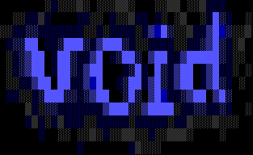

Vilson Vieira (a.k.a automata) is a software engineer, artist and open source enthusiast who has being developing for Google, Mozilla, The Grid and most recently for Extend AI
// BSc. in Computer Science and MSc. in Computational and Applied Physics by University of São Paulo advised by
profs. Gonzalo Travieso and Luciano da Fontoura Costa.
Twitter - GitHub
Open Source Projects
- Meemoo // A dataflow programming environment for Web art by Forrest Oliphant
- GMR Saliency // C++ implementation of SLIC for paper "Saliency Detection via
Graph-Based Manifold Ranking" by Chuan Yang et al.
- KLayJS // Bower component and
easy-to-use wrapper to KLayJS, making it possible to use KLayJS as a Web
Worker on modern browsers
- NofloJS // Developed some components libraries for
this dataflow programming library by Henri Bergius
- Vivace // One of the first domain specific languages
for livecoding using Web Audio API. Presented on workshops and festivals on
Brazil.
- AutoVJ // A just-for-fun GIF-based VJ tool
Timeline
- 2018 - Present // AI Engineer at Extend AI
- 2017 - Present // Co-founder of CodAI
- 2014 - 2017 // Software Engineer at The Grid
- 2014 // Software Engineer at Google/Mozilla (GSoC)
- 2011 - 2013 // MSc at University of São Paulo (CAPES grant)
- 2011 - 2013 // Co-founder and team leader of LabMacambira
- 2012 // Software Engineer at Google/Mozilla (GSoC)
- 2009 - 2012 // Co-founder of MuSA
- 2008 - 2010 // Professor at University of Santa Catarina
- 2008 - 2010 // Professor at FCJ
- 2007 - 2008 // Software Enginner at Embraco/Whirpool
- 2003 - 2007 // BSc at University of Santa Catarina
About
Vilson Vieira received his BSc. in Computer Science at 2007 from University of Santa Catarina (Udesc) and MSc. in Applied Physics at 2014 from University of São Paulo (USP). Worked as data mining consultant for 1 year and a half. On this period began to teach programming courses at Udesc.
His macro-areas of research include Creativity Exploration, Alternative Computer Programming like Flow Based Programming, (Electronic) (Algorithmic) Music Composition, Computational Creativity, Digital/Software/Electronic Art, Physical Computing and Artificial Intelligence.
Vilson also helped to create the Brazilian Lisp User Group, the multimedia, systems & arts collective MuSA and the FLOSS development team LabMacambira.
He is a free software and hardware enthusiast, releasing his projects using open source licenses.
Recently working with The Grid team on Noflo, Flowhub and Meemoo. With prof. Michel Hospital (UFSCar) on OvO Project. With prof. Luciano da Fontoura Costa (IFSC/USP) and prof. Gonzalo Travieso (IFSC/USP) on a computational creativity research.
Academics
Recently researching computational creativity as part of a Master Program on Computational Physics atUniversidade de São Paulo supported by CAPES.
Main research interests
- Algorithmic Music Composition
- Computational Creativity
- Digital/Software/Electronic Art
- Physical Computing
- Machine Learning
Grants
- Google Summer of Code 2014 for Mozilla
- Google Summer of Code 2012 for Mozilla
Selected Publications
Selected Exhibitions, Talks and Events
- 2015 : Chaos Communication Camp : Berlin, DE : With The Grid team
- 2014 : ENCUN 2014. National Encounter of Music Composers : São Paulo, BR : Web Audio and Livecoding Workshop. With Guilherme Lunhani and Caleb Luporini
- 2014 : MozFest 2014 London. Art and Culture of the Web : London, UK : Turtle Power and Art Bazaar. With TheGrid team
- 2014 : ArtBio : Rio de Janeiro, BR : Generative Painting by Delaunay Triangulation
- 2014 : IFSC : São Carlos, BR : Master thesis defense
- 2013 : SIFISC 2013 : São Carlos, BR : A Study on Generative Paintings (exposition)
- 2012 : AVAV[7] : São Paulo, BR : Livecoding / Freakcoding. With LabMacambira
- 2012 : AVAV[6] : São Paulo, BR : AirHackTable. With LabMacambira
- 2011 : SESC Pompéia : São Paulo, BR : Ciclo Hack
- 2011 : TDC : São Paulo, BR : Making noise with JavaScript
- 2010 : Galeria Victor Kursancew : Joinville, BR : Mímesis Mulleriana uma Plágio Combinação
- 2010 : XI FISL : Porto Alegre, BR : Livecoding
- 2010 : IV SOLISC : Florianópolis, BR : Atelier Livre
- 2009 : X FISL : Porto Alegre, BR : I Festival de Robótica Livre
- 2009 : Latinoware : Foz do Iguaçú, BR : III Olimpíada de Robótica Livre Latino-americana
- 2008 : IX FISL : Porto Alegre, BR : Collective Intelligence with Lisp
- 2008 : Latinoware : Foz do Iguaçú, BR : CL-Weblocks
- 2007 : VIII FISL : Porto Alegre, BR : Uncommon Web Development with Common Lisp
- 2007 : 56th ISI : Lisboa, PT : Using the Internet to teach Statistics and the Statistical Environment R with Prof. Elisa Henning
- 2007 : XXX CNMAC : : Programando em R [...]
- 2005 : III SOLISC : Florianópolis, BR : Debian-BR-CDD: Debian à Brasileira
Collectives
Teaching
- Udesc : Artificial Intelligence
- Udesc : Object Oriented Programming
- Udesc : Functional Programming
- Udesc : Introduction to Computer Science
- Udesc : Programming to Engineering
- FCJ : Operational Systems
- FCJ : Algorithms and Data Structures
- FCJ : Object Oriented Programming
Participation in Events
- 2014 : Scientific Writing in English: Tools and Techniques. Prof. Ethel Schuster (Northern Essex Community College – NECC).
- 2014 : Workshop on Human-Robot Interaction. Prof. Gabriele Trovato. Waseda University.